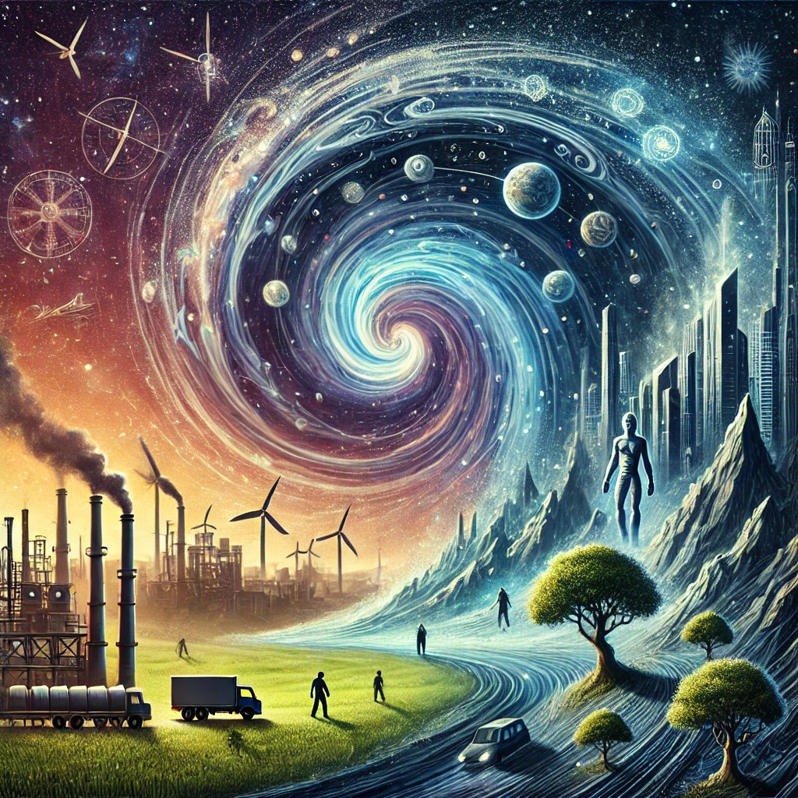

무질서함에 대한 척도인 엔트로피와, 변화는 항상 엔트로피가 증가하는 방향으로 이루어진다는 법칙을 통하여,
과거 사회의 현상과, 발전 과정을 분석하여 현재 우리 사회 발전의 방향성을 제시해준다.
엔트로피가 증가하는 속도를 늦추기 위해, 자연과 조화를 이루는 방식으로 발전하고, 살아가야 한다고 제언한다.

감상평에 대한 AI평가
✨작성하신 감상문은 *"엔트로피"*의 핵심 개념을 잘 정리하고 있습니다.
✨엔트로피 증가의 법칙을 사회 발전에 적용하는 관점과 지속 가능성에 대한 제언이 인상적입니다.
✨책의 구체적인 사례를 추가하면 논의가 더욱 풍부해질 것입니다.
✨개인적인 생각이나 질문을 덧붙이면 더욱 깊이 있는 감상문이 될 것입니다.